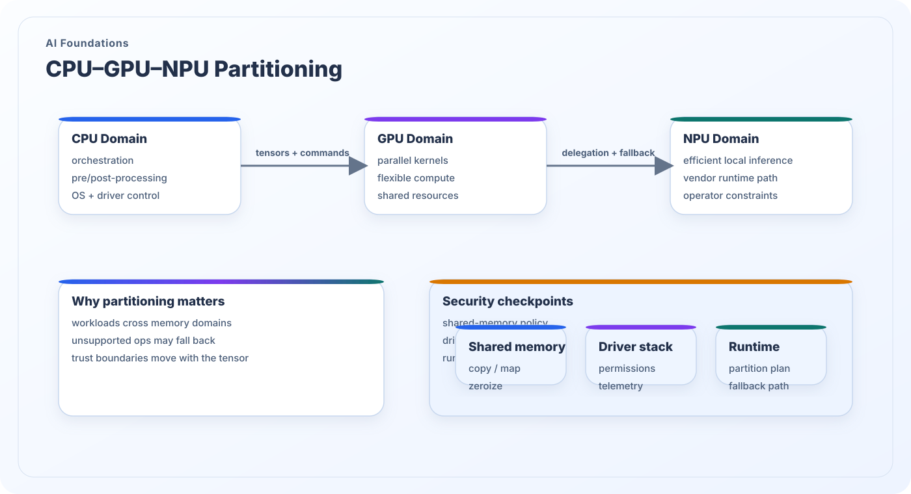

CPU–GPU–NPU Partitioning
Client and edge AI systems rarely run end-to-end on one homogeneous processor. Real deployments partition work across CPUs, GPUs, and NPUs, and that partitioning defines where tensors move, where permissions change, and where trust boundaries become visible.
What this topic covers
CPUs usually handle control-heavy orchestration, preprocessing, post-processing, and operating-system integration. GPUs absorb throughput-oriented parallel workloads. NPUs target efficient local AI inference under tighter power and thermal budgets. The actual split depends on model type, latency goals, toolchain support, and vendor runtime capabilities.
For security analysis, heterogeneous partitioning changes the observation points. A model that appears “local” may actually move tensors through shared memory, drivers, runtime translation layers, and fallback paths. Those movements can expose data, expand telemetry, or create silent policy gaps when unsupported operators leave the protected execution path.
Security significance
- Heterogeneous execution introduces multiple memory domains and driver boundaries.
- Operator fallback paths can move sensitive tensors into less trusted software stacks.
- Security controls must follow the data as it crosses CPU, GPU, and NPU ownership.
- Edge AI trust models are incomplete without an execution-partition view.

Functional roles in heterogeneous systems
Different processors are chosen for different operational reasons, and those reasons affect the security story.
CPU domain
The CPU runs orchestration logic, model loading, preprocessing, runtime control, fallback handling, and many security-critical software checks. It is often the richest control point and the broadest attack surface.
GPU domain
The GPU provides flexible parallel execution and often handles large tensor kernels or graphics-adjacent compute. It may expose more tooling and visibility than an NPU, but also higher complexity and larger shared resource surfaces.
NPU domain
The NPU aims for efficient AI execution with tight energy and thermal control. Its runtimes may be more opaque, making operator coverage, model partitioning, and telemetry handling especially important for security reasoning.
Partition-aware security checks
To secure a client or edge pipeline, the partition itself must be part of the threat model.
Memory and copy policy
Who owns the tensor buffer before and after each stage? Shared-memory mapping, DMA, and zeroization policy determine whether intermediate state remains exposed longer than intended.
Driver and runtime permissions
Execution stacks often include vendor runtimes, kernel drivers, and user-space APIs. Each layer may collect telemetry, retain model metadata, or define privileged control paths.
Fallback and unsupported operators
If the NPU cannot run an operator, the runtime may silently move execution elsewhere. That fallback path can invalidate assumptions about locality, confidentiality, or real-time behavior.
Back to the research map
Return to the structured research overview or continue browsing the other AI foundations and AI security themes.